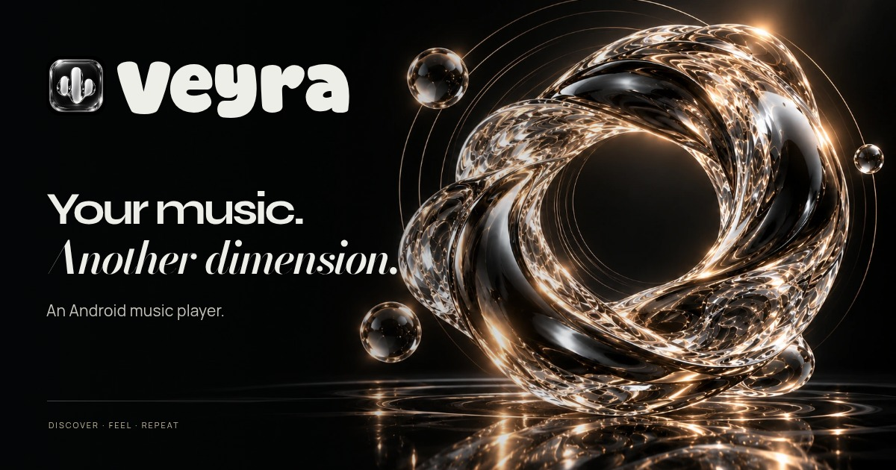
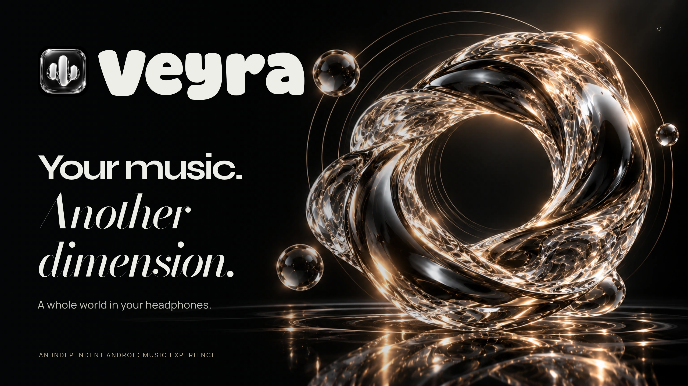
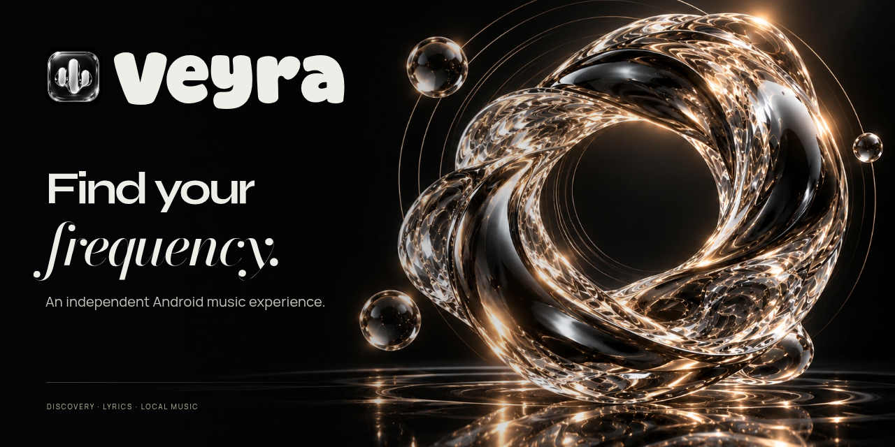
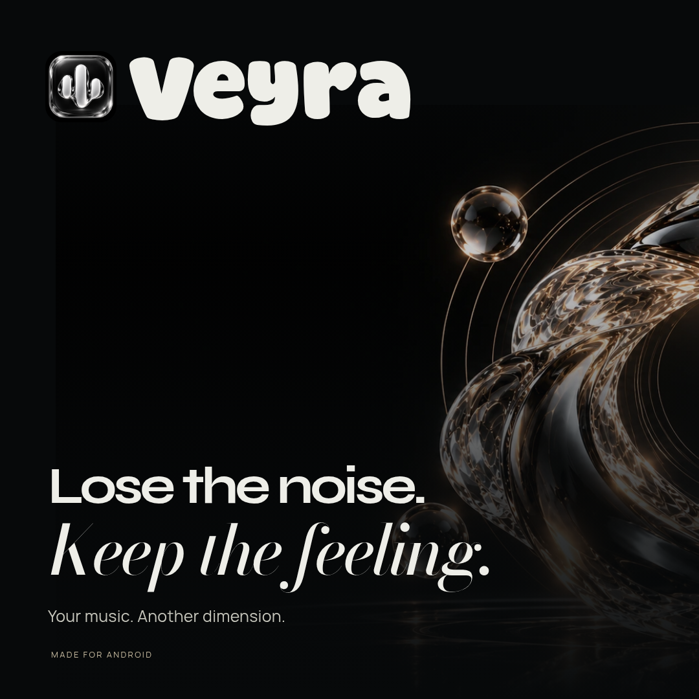
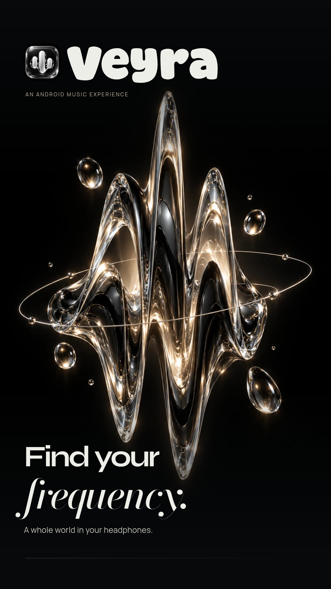
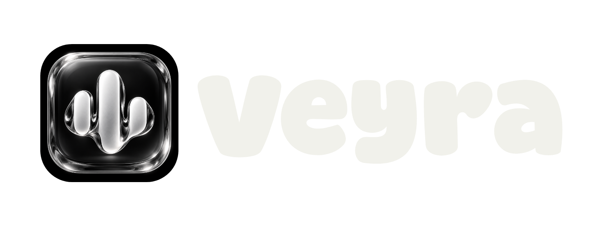
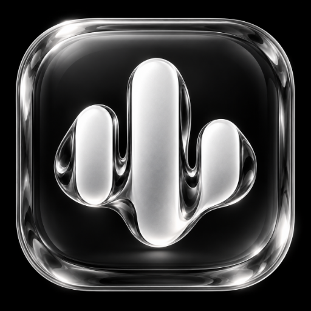

1200 × 630 · JPEG
Link-sharing card
Primary thumbnail for WhatsApp and other link previews.
Official artwork / collection 01
Original campaign artwork, the real Veyra app icon, and precise branded layouts. Browse the previews or download the full-size files for your website, repository and promotional posts.

Primary thumbnail for WhatsApp and other link previews.

Large landscape artwork for the website and app showcase.

Repository social-preview upload and README banner.

Square campaign artwork for posts and image galleries.

Vertical promotional artwork for mobile stories and status posts.
Wide promotional format, sized for a 1024 by 500 feature slot.

Real app icon with the Veyra wordmark; transparent outside the graphic.
Website/bookmark icon derived from the original app artwork.

Website/bookmark icon derived from the original app artwork.
Website/bookmark icon derived from the original app artwork.
Website/bookmark icon derived from the original app artwork.
Unchanged high-resolution glass-waveform app artwork.
Use the link-sharing JPEG for your site’s preview image; the 1280 × 640 GitHub image can be uploaded in your repository’s Social preview settings. The 1024 × 500 graphic is a useful feature-slot format, not a claim of store approval. Banners contain branding and original artwork, not Android app screenshots.
The transparent lockup has a transparent canvas around the original app icon and wordmark. Keep asset provenance and font/component notices with source distributions. No UPI support or obsolete upstream banner is included.